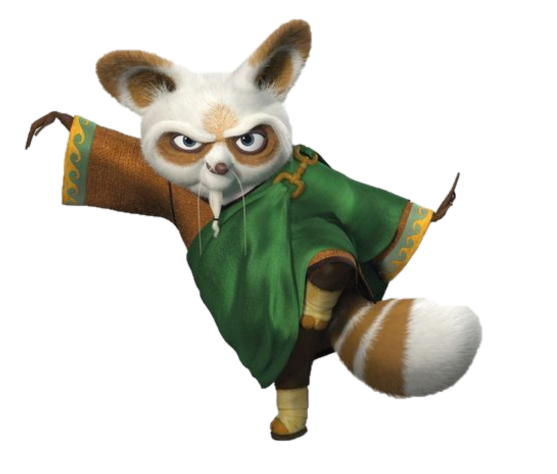

Master Shifu

Hello! So you came to hear my story? Well okay, I will share
it with you. My name's Shifu, and, well for a long time
in my life, I was not a happy man.
For my younger years, I would perform scams with my dad, we
would sell fake healing flowers, I would be the sick kid
that somehow magicly get's healed and we would get money.
We had to be on the road a lot, because after people found out
that we were scammers, they obviously want their money back.
While I truly don't know the reason for my dad leaving me,
he did, and I think it was for the best...
So after my dad left me in the jade palace, Master Oogway took me.
That's how I began to train in the Jade Palace with my master.
After I became good at Kung Fu, Master Oogway formed the first
Furious Five, It was me and 4 other Masters. One of them was
Fenghuang, she was the best out of all 5 of us. But instead of
controlling the power, the power started to controll her, and she became
evil. After managing to lock her up, she managed to escape and is
now hiding in the mountains.
Now you may thing that I had a bad life, my father
left me, one of my closest friend turned evil, the worst
is yet to come!
Yes, the worst day of my life was truly the day Po was
chosen as the Dragon Warior. I will never forget that day.
It was truly horrifying.
But that was the line. After me witnessing the worst day
of my life, I actually managed to find inner peace!
Since then, I learned to manage my emotions, and now
I am truly a happy man!
Well at least until I find Po, that Panda must stop breaking the
training hall!!